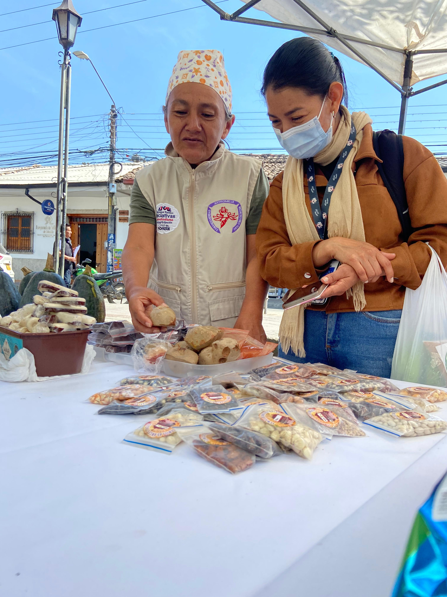
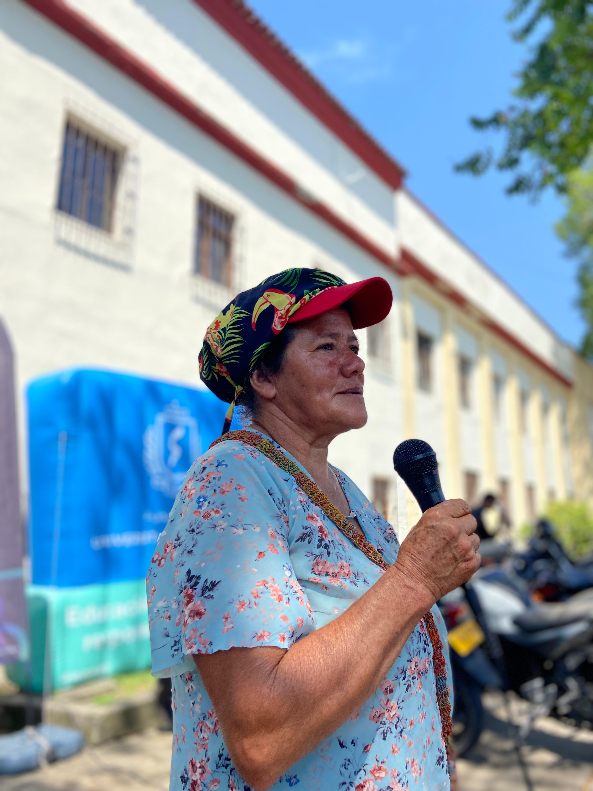
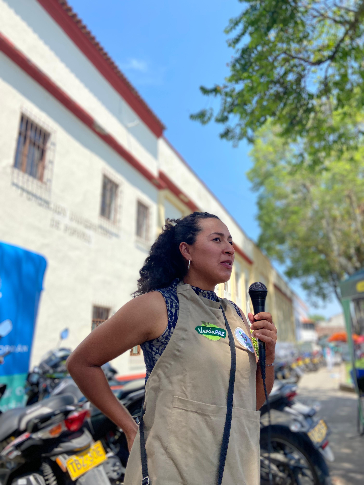
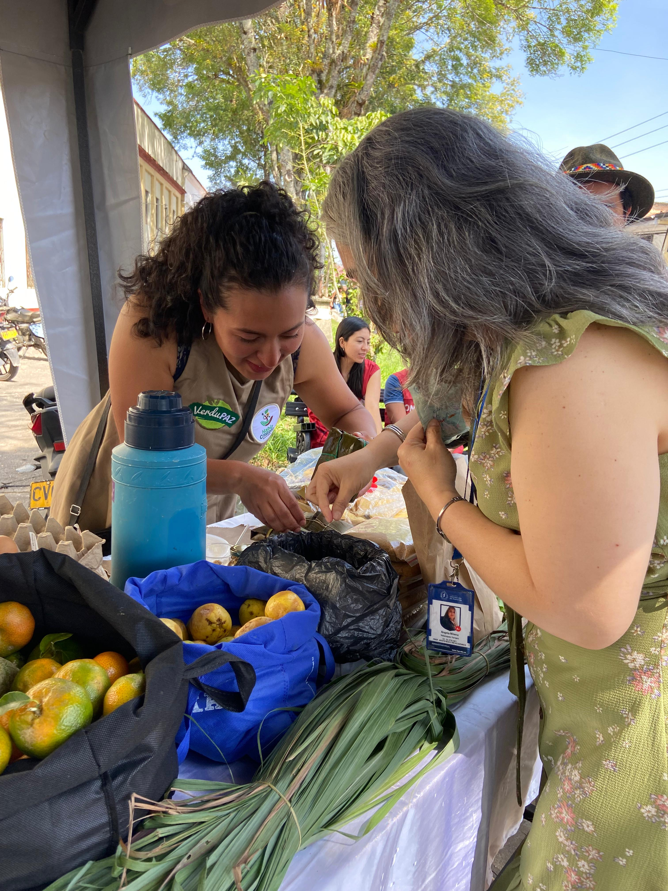
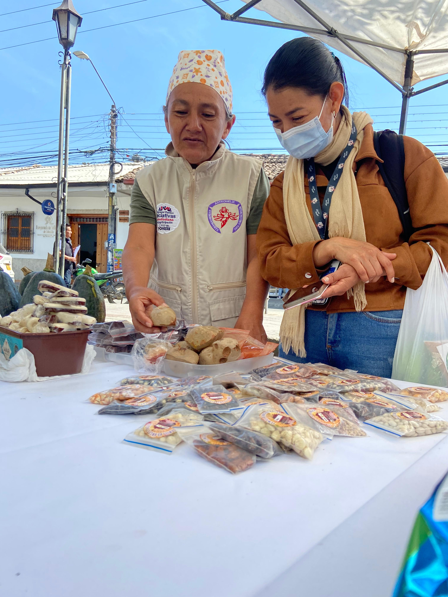
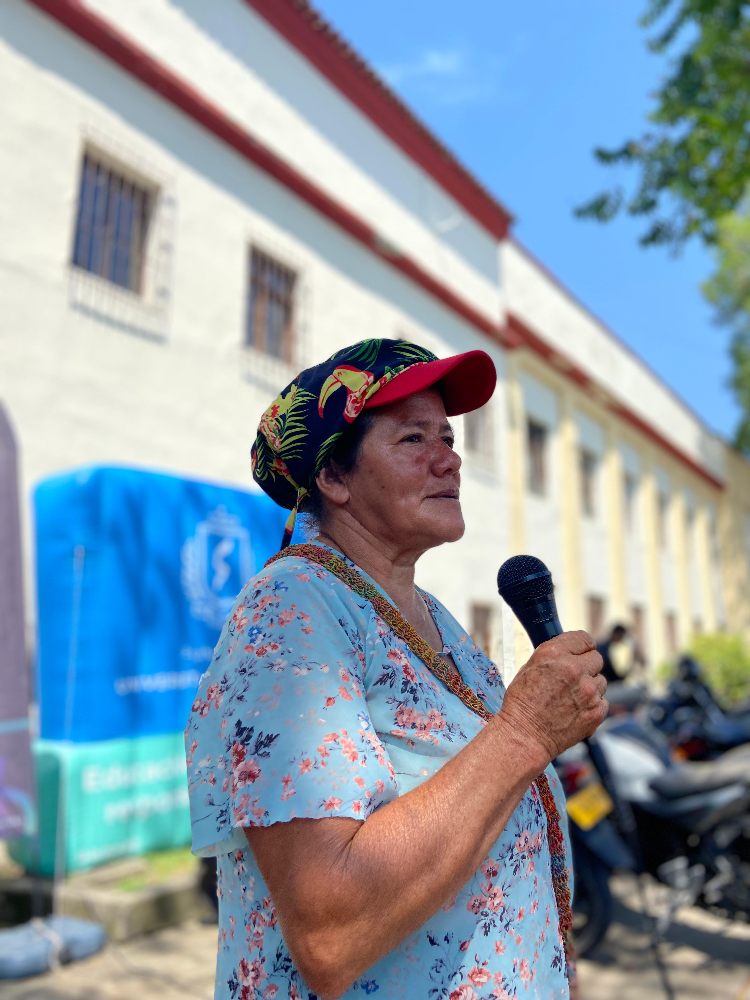
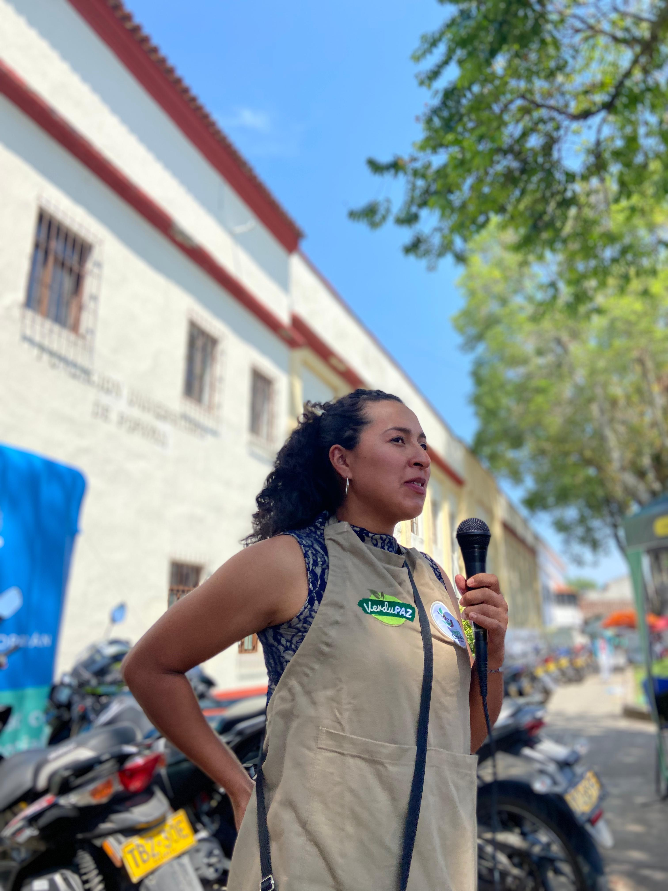
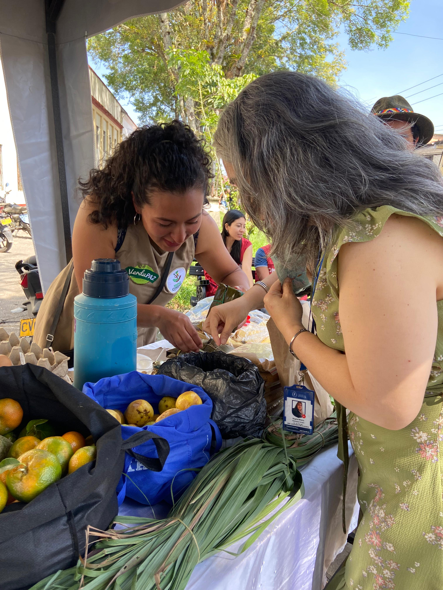
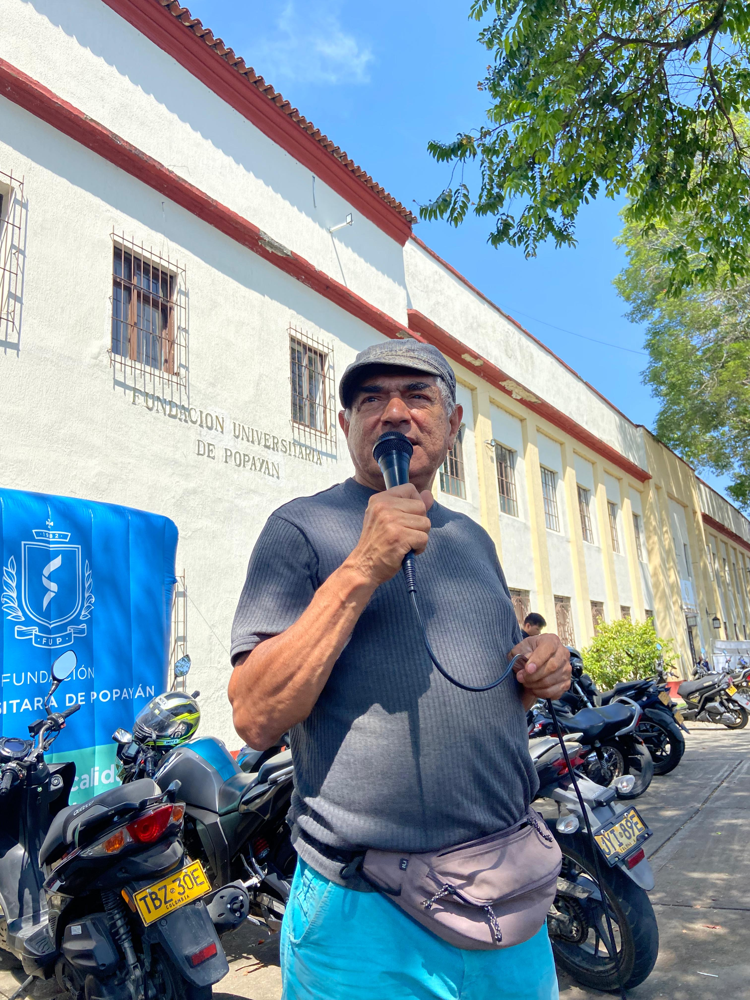
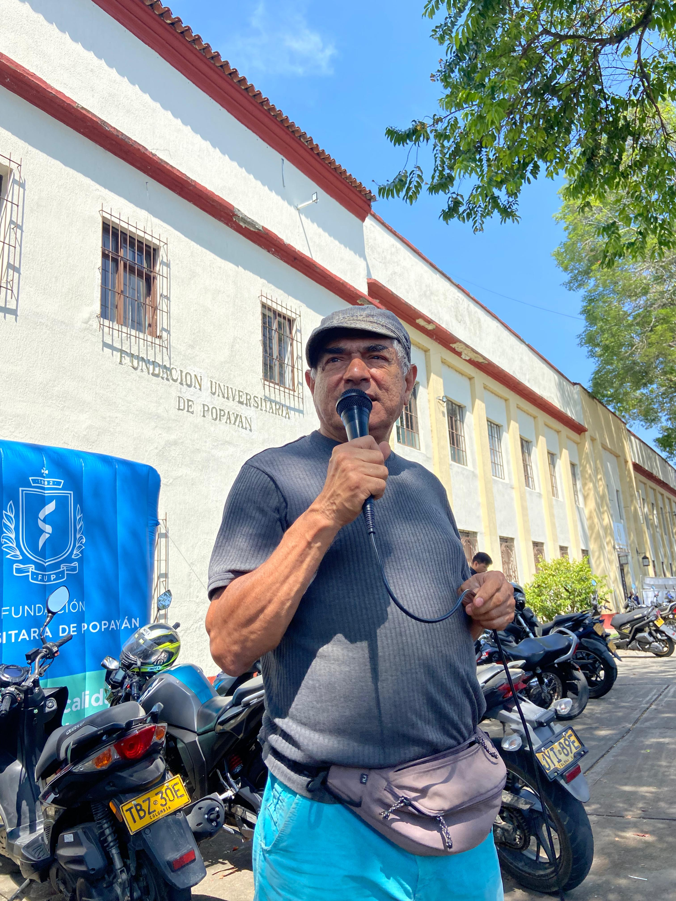

¿Qué es el Mercado Agroecológico 4.0?
Es una plataforma tecnológica que conecta a productores agroecológicos con consumidores finales, permitiéndoles comercializar sus productos de manera directa, justa y transparente
¿Cómo funciona?
- Conecta a familias productoras y consumidores
- Promueve el agroecología
- Fomenta el intercambio de saberes
- Visibiliza a los productores
¿Quiénes participan?
- Federación Campesina del Cauca
- Fundación Mambrú Internacional
- Corporación Gentes del Sur
¿Por qué es importante?
- Ofrece una alternativa viable y sostenible a la agricultura industrial
- Promueve el comercio justo y directo, beneficiando a las familias productoras y dinamizando las economías locales
- Facilita el acceso a productos de alta calidad, libres de químicos y producidos de manera responsable
- Contribuye a la soberanía alimentaria


 








 
